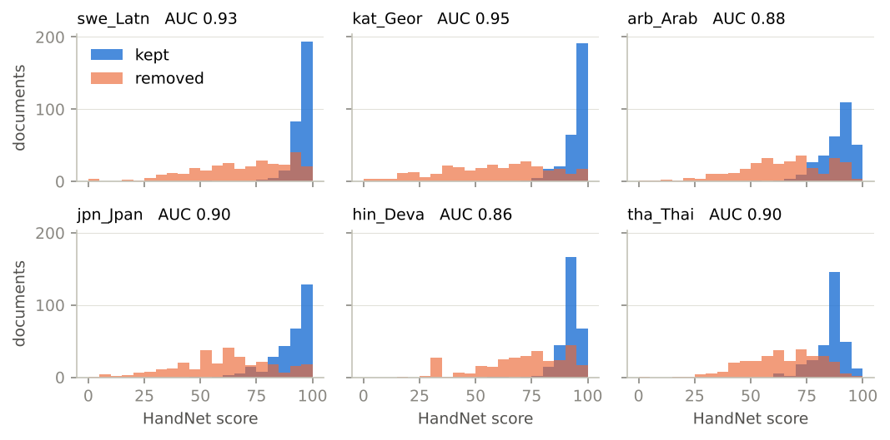
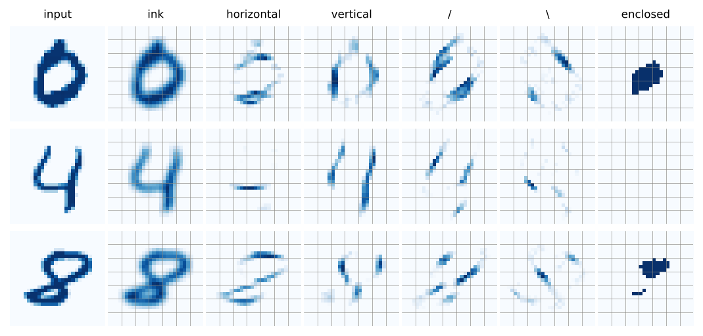
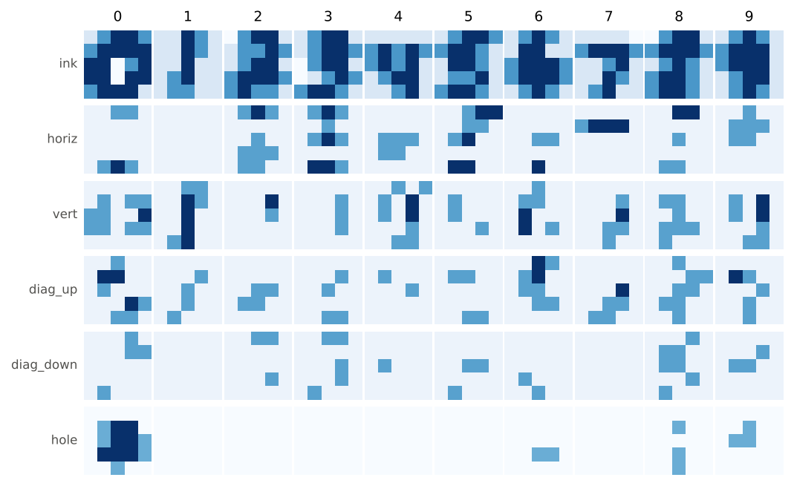

HandNet
neural networks whose weights were written by hand
What happens if you build a neural network the way an engineer builds a circuit — by deciding every weight instead of growing them with gradient descent? Two networks, zero training, every unit named. A text-quality gate that works in every script, and MNIST, the hello world of machine learning, done without the learning.
1 · Text quality in every language
handnet.text_quality.HandNet scores a document 0–100 for pretraining-filter quality: markup, mojibake, repetition,
shouting, tables, logs, navigation fragments. Its "tokenizer" is 40 per-character Unicode attributes — letter, case, digit,
punctuation class, script group, mojibake markers — so no weight knows any word and the same 627 numbers score Swedish,
Georgian, Japanese, Arabic, Hindi or Thai. Downstream: a width-5 convolution with 48 named pattern channels, a ReLU-RNN of
run-length counters, pooling, and a four-layer MLP of 46 named penalty/reward detectors with point budgets
(-mojibake 35, -markup 20, +sentences 8, …), length gates and script gates.
FineWeb-2: does it agree with a production filtering pipeline?
FineWeb-2 publishes, per language, the documents its filters kept and the ones they removed. 300 + 300 documents per language, AUC(kept > removed). Grey bars: the strongest single-statistic baseline, the fraction of characters that are letters. Hover a bar for the numbers.
| language | HandNet | length | letters | words | avg word | kept mean | removed mean | removed < 50 | ms/doc |
|---|---|---|---|---|---|---|---|---|---|
swh_Latn | 0.976 | 0.736 | 0.885 | 0.902 | 0.512 | 92.2 | 44.8 | 53% | 7.7 |
vie_Latn | 0.958 | 0.698 | 0.866 | 0.915 | 0.391 | 92.9 | 63.7 | 24% | 10.4 |
kat_Geor | 0.949 | 0.697 | 0.827 | 0.858 | 0.347 | 95.2 | 58.4 | 36% | 7.8 |
heb_Hebr | 0.947 | 0.643 | 0.846 | 0.886 | 0.731 | 93.0 | 58.6 | 33% | 8.6 |
bul_Cyrl | 0.946 | 0.668 | 0.819 | 0.873 | 0.529 | 96.0 | 66.9 | 20% | 9.2 |
hye_Armn | 0.945 | 0.534 | 0.769 | 0.763 | 0.503 | 93.5 | 57.0 | 30% | 8.8 |
fin_Latn | 0.941 | 0.696 | 0.826 | 0.861 | 0.403 | 97.4 | 64.8 | 25% | 8.3 |
dan_Latn | 0.940 | 0.657 | 0.729 | 0.803 | 0.688 | 95.3 | 66.5 | 17% | 5.5 |
pol_Latn | 0.934 | 0.643 | 0.815 | 0.818 | 0.432 | 95.4 | 64.5 | 23% | 7.5 |
hun_Latn | 0.933 | 0.705 | 0.780 | 0.854 | 0.426 | 96.3 | 64.4 | 22% | 8.0 |
ces_Latn | 0.932 | 0.675 | 0.801 | 0.852 | 0.499 | 95.1 | 62.3 | 28% | 6.8 |
swe_Latn | 0.928 | 0.671 | 0.821 | 0.882 | 0.649 | 95.2 | 68.8 | 21% | 7.1 |
nld_Latn | 0.924 | 0.638 | 0.734 | 0.846 | 0.678 | 94.8 | 68.8 | 14% | 6.1 |
ukr_Cyrl | 0.923 | 0.668 | 0.807 | 0.853 | 0.513 | 95.7 | 64.7 | 27% | 11.8 |
kor_Hang | 0.918 | 0.492 | 0.752 | 0.850 | 0.524 | 80.4 | 41.5 | 59% | 4.6 |
ron_Latn | 0.904 | 0.631 | 0.759 | 0.836 | 0.564 | 93.6 | 68.7 | 17% | 8.8 |
por_Latn | 0.903 | 0.637 | 0.720 | 0.770 | 0.700 | 94.0 | 67.0 | 17% | 7.6 |
deu_Latn | 0.901 | 0.628 | 0.707 | 0.849 | 0.518 | 95.6 | 74.1 | 10% | 7.8 |
tur_Latn | 0.901 | 0.604 | 0.764 | 0.780 | 0.361 | 94.5 | 70.5 | 13% | 7.8 |
cmn_Hani | 0.900 | 0.559 | 0.832 | 0.709 | 0.137 | 91.1 | 62.2 | 25% | 4.3 |
tha_Thai | 0.899 | 0.571 | 0.955 | 0.862 | 0.057 | 85.6 | 64.3 | 21% | 8.0 |
jpn_Jpan | 0.896 | 0.533 | 0.850 | 0.749 | 0.131 | 90.8 | 61.3 | 26% | 5.3 |
tam_Taml | 0.889 | 0.682 | 0.904 | 0.881 | 0.316 | 96.0 | 73.6 | 13% | 10.1 |
ind_Latn | 0.885 | 0.631 | 0.815 | 0.796 | 0.360 | 95.3 | 75.3 | 10% | 8.8 |
arb_Arab | 0.883 | 0.612 | 0.771 | 0.832 | 0.609 | 88.6 | 64.4 | 21% | 8.7 |
spa_Latn | 0.882 | 0.651 | 0.708 | 0.787 | 0.641 | 94.2 | 74.3 | 9% | 10.1 |
rus_Cyrl | 0.881 | 0.607 | 0.733 | 0.805 | 0.414 | 95.9 | 75.8 | 10% | 9.3 |
nob_Latn | 0.879 | 0.593 | 0.696 | 0.783 | 0.679 | 94.8 | 71.7 | 13% | 6.2 |
ell_Grek | 0.875 | 0.646 | 0.767 | 0.854 | 0.591 | 94.1 | 69.6 | 19% | 8.6 |
fra_Latn | 0.865 | 0.659 | 0.659 | 0.805 | 0.550 | 94.1 | 74.2 | 10% | 7.4 |
hin_Deva | 0.857 | 0.604 | 0.656 | 0.733 | 0.534 | 91.9 | 71.3 | 14% | 6.7 |
ben_Beng | 0.831 | 0.599 | 0.748 | 0.775 | 0.621 | 93.8 | 74.6 | 13% | 9.4 |
ita_Latn | 0.816 | 0.650 | 0.650 | 0.722 | 0.564 | 93.1 | 76.4 | 5% | 6.9 |
Blue: HandNet beats every baseline; orange: a baseline wins. Thai is the one loss — no sentence punctuation, no word spaces, so most structure detectors are gated off. FineWeb-2's decisions are themselves rule-based, so this measures agreement between two rule systems, not ground truth.

Ablation: which detectors matter?
| variant | mean AUC | Δ | worst language |
|---|---|---|---|
| full | 0.907 | 0.816 ita_Latn | |
| without noise | 0.905 | -0.003 | 0.810 ita_Latn |
| without repetition | 0.904 | -0.003 | 0.809 ita_Latn |
| without composition | 0.906 | -0.001 | 0.816 ita_Latn |
| without formatting | 0.858 | -0.049 | 0.688 tha_Thai |
| without tokens | 0.909 | +0.001 | 0.815 ita_Latn |
| without structure | 0.906 | -0.002 | 0.820 ita_Latn |
| without length | 0.905 | -0.003 | 0.806 ita_Latn |
| without mixed_scripts | 0.907 | -0.001 | 0.817 ita_Latn |
| without reward | 0.913 | +0.006 | 0.830 ita_Latn |
Only the formatting group (line breaks mid-sentence, bullet lines, space before punctuation, ellipses) carries real weight: without it the mean drops from 0.907 to 0.858 and Thai collapses to 0.69. The other groups are nearly redundant here, and switching off the rewards or the tokens group slightly improves agreement. An honest negative result for the design method: several detectors that are easy to justify (shouting, digit runs, giant tokens) contribute nothing measurable on this benchmark.
What it cannot do: grammar. On minimal pairs differing by one inflection or a swapped word it is at chance — a character-level net with hand-set weights has no morphology and no word order. It is the cheap first filter.
2 · MNIST without the training
handnet.mnist_holes.MNISTNet classifies digits with five hand-drawn 5×5 kernels (ink, horizontal, vertical, / and \),
a recurrent hole finder that floods the background from the border so that whatever is never reached is a loop
(the inside of a 0, 6, 8, 9), zone pooling over a 5×5 grid, each digit drawn by hand as 5×5 ASCII-art sketches per channel
(a sketch is a prototype: its unit computes W·x − ½‖W‖², minus the squared distance to the drawing), and 29 named
evidence units (four:open_top, bottom_bar, hole:top_only, …) that vote.

The sketches are the weights
Ink and hole sketches, as they appear in the source (# strong, + some, . little,
- must be empty). The four stroke channels have their own set.
.+##+ +#### ##-+# ##-## +###.
..#+. ..#+. ..#.. .+#.. .++..
-+##. .++#+ .+##. +###+ +#++.
.+##. .+##+ -+##. -.+#+ +##+.
..... +#+#+ +#+#. .+##. ..+#.
.+##+ +##+. .##+. .++#. +##+.
.+#+. .##.. +###+ +###+ .+#+.
....- +###+ ..+#. ..#+. .+#..
-+##. +###+ .+#+. +##+. +##+.
.+#+. +###. +###. .+##. .+#+.
..... .+##. .+##+ .###+ ..+..
..... ..... ..... ..... .....
..... ..... ..... ..... .....
..... ..... ..... ..... .....
..... ..... ..... ..... .....
..... ..... ..... ..... .....
..... ..... ..... ..++. .....
..... ..... ..... ..... .....
..... ..+.. ..... ..+.. ..+..
..... ..+.. .++.. ..... .....

Test set, scored once
| true \ pred | 0 | 1 | 2 | 3 | 4 | 5 | 6 | 7 | 8 | 9 | acc |
|---|---|---|---|---|---|---|---|---|---|---|---|
| 0 | 850 | 1 | 16 | 7 | 3 | 41 | 33 | 2 | 22 | 5 | 86.7% |
| 1 | 0 | 1077 | 49 | 5 | 0 | 0 | 1 | 0 | 0 | 3 | 94.9% |
| 2 | 3 | 16 | 943 | 22 | 5 | 4 | 6 | 27 | 2 | 4 | 91.4% |
| 3 | 0 | 13 | 38 | 919 | 0 | 18 | 2 | 17 | 1 | 2 | 91.0% |
| 4 | 1 | 38 | 42 | 2 | 789 | 2 | 33 | 13 | 0 | 62 | 80.3% |
| 5 | 2 | 13 | 27 | 65 | 15 | 688 | 8 | 67 | 2 | 5 | 77.1% |
| 6 | 10 | 21 | 12 | 0 | 49 | 47 | 815 | 1 | 3 | 0 | 85.1% |
| 7 | 1 | 49 | 54 | 4 | 32 | 0 | 1 | 848 | 2 | 37 | 82.5% |
| 8 | 21 | 19 | 44 | 18 | 13 | 49 | 48 | 12 | 632 | 118 | 64.9% |
| 9 | 12 | 30 | 13 | 10 | 88 | 35 | 3 | 42 | 3 | 773 | 76.6% |
83.3% on the 10,000 test images. Majority class 11.3%; a trained nearest-class-mean classifier on raw pixels (fit on 20,000 training images) gets 81.6%; a trained convnet gets 99%+. The design was iterated on the first 5,000 training images (a held-out training slice gives 82.8%, so the hand tuning did not overfit).
Top confusions: 8→9 (118), 9→4 (88), 5→7 (67), 5→3 (65), 4→9 (62), 7→2 (54). They are what a 5×5 sketch should get wrong: loops that did not close (8→9, 9→4), closed-top 4s (4→9), and the 5/3/7 family where a 5 with a short roof is a 3 with a corner.
Which evidence fires, per true digit (% of test images)
| unit | 0 | 1 | 2 | 3 | 4 | 5 | 6 | 7 | 8 | 9 |
|---|---|---|---|---|---|---|---|---|---|---|
hole:none | 14 | 100 | 80 | 100 | 94 | 99 | 37 | 100 | 11 | 26 |
hole:big | 77 | 0 | 0 | 0 | 0 | 1 | 1 | 0 | 11 | 2 |
hole:top_only | 0 | 0 | 0 | 0 | 1 | 0 | 0 | 0 | 11 | 64 |
hole:bottom_only | 9 | 0 | 19 | 0 | 0 | 1 | 57 | 0 | 38 | 0 |
hole:top_and_bottom | 86 | 0 | 3 | 0 | 0 | 1 | 16 | 0 | 53 | 38 |
narrow | 1 | 86 | 1 | 2 | 2 | 0 | 5 | 5 | 3 | 5 |
one:central_vertical | 1 | 95 | 8 | 21 | 30 | 4 | 11 | 50 | 9 | 16 |
four:open_top | 1 | 1 | 0 | 0 | 73 | 2 | 23 | 2 | 0 | 2 |
seven:roof | 1 | 0 | 3 | 4 | 0 | 2 | 1 | 65 | 5 | 9 |
two:foot | 9 | 0 | 49 | 37 | 8 | 25 | 6 | 2 | 8 | 3 |
three:bumps | 0 | 0 | 0 | 40 | 0 | 2 | 0 | 1 | 0 | 0 |
five:corner | 11 | 0 | 5 | 4 | 34 | 60 | 45 | 4 | 31 | 34 |
six:left_sweep | 17 | 0 | 0 | 0 | 2 | 1 | 56 | 0 | 5 | 2 |
nine:stem | 0 | 0 | 0 | 1 | 46 | 7 | 1 | 43 | 6 | 58 |
zero:ring | 45 | 0 | 1 | 0 | 6 | 0 | 4 | 0 | 0 | 0 |
bottom_bar | 89 | 1 | 67 | 84 | 0 | 72 | 47 | 0 | 49 | 5 |
roof_row1 | 5 | 0 | 2 | 4 | 0 | 6 | 1 | 62 | 3 | 1 |
top_centre_filled | 74 | 72 | 56 | 90 | 18 | 71 | 59 | 50 | 76 | 59 |
hole:none fires on 99% of 1s, 3s, 5s and 7s — and on 26% of 9s and 37% of 6s, which is where the
accuracy goes.
3 · Live demo
These run the actual Python package in your browser through Pyodide (NumPy, ~10 MB, loaded once on first use). Nothing is sent anywhere.
Score a text
Draw a digit
4 · How this was made
Both networks were written by Claude (Anthropic's Claude Fable 5.1) in conversation with Birger Moëll, who set the tasks, the rule and the standard of evidence. The text net was written first as the cheap pre-filter of a multilingual data-quality pipeline for the OpenEuroLLM languages; this repo lifts it out and adds the MNIST net, the evaluations, the paper and this page, all in one session on 4 November 2026.
The rule. A weight may be set by reasoning ("clean prose has about one sentence end per hundred characters", "a 4 has an empty top centre") and checked against data, but never fit to data: no gradients, no optimiser, no search over weight values. Every non-zero weight is in the source next to the unit it belongs to.
What "checked" meant. Text: a handful of hand-written prose and junk examples in five scripts (now the tests), and reading the worst-scored FineWeb-2 documents to see which detector was wrong. MNIST: class-conditional means of the zone features on 5,000 training images to put each threshold at the knee between a digit and its neighbours; sketches drawn from how the average digit looks at 5×5; about a dozen rounds of "look at the confusion matrix, which unit is to blame, adjust its votes". The test set was scored once.
Why it is a network and not a rule engine. Everything is matrix products, ReLUs and one recurrence; to_torch()
returns an nn.Module with the same tensors, and the tests check it matches NumPy to 1e-3. Which also means the obvious
next experiment — fine-tune from a designed initialisation — is one line away. This repo deliberately does not run it.
pip install git+https://github.com/BirgerMoell/handnet
python -m pytest -q tests
python examples/text_quality/eval_fineweb2.py --out examples/text_quality/fineweb2_results.json
python examples/mnist/eval_mnist_holes.py --out examples/mnist/mnist_holes_results.json